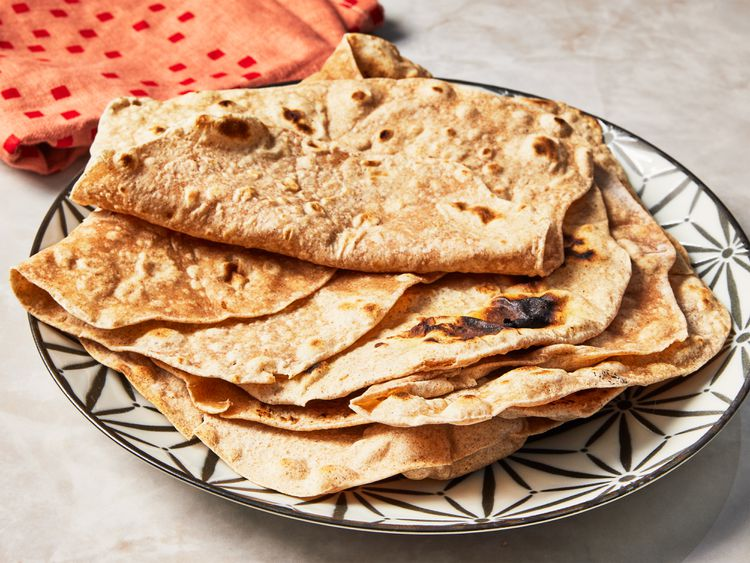

Indian Chapati

Description
Chapati is a type of unleavened bread that is commonly eaten in South Asia. It is made with whole wheat flour, water, and oil, and is typically cooked on a griddle or skillet. Chapati is a staple food in many South Asian countries and is often served with curries, vegetables, or other dishes. It is simple to make and can be enjoyed as a side dish or as a main course. Chapati is a versatile bread that can be eaten with a variety of foods and is a popular choice for many people in South Asia.
Ingredients
- 1 cup whole wheat flour
- 1 cup all-purpose flour
- 1 teaspoon salt
- 3/4 cup hot water or as needed
- 2 tablespoons olive oil or vegetable oil
Instructions
- Gather all Ingredients
- Mix whole wheat flour, all-purpose flour, and salt in a large bowl. Use a wooden spoon to stir in water and oil. Mix until a soft, elastic dough forms and add more water, if needed.
- Knead dough on a lightly floured surface until smooth.
- Divide dough into 10 equal portions, or less if you want larger chapatis. Roll each piece into a ball and let rest for a few minutes.
- Heat a lightly greased skillet over medium heat. Use a rolling pin to roll dough balls out on a lightly floured surface until very thin.
- When the skillet starts to smoke, place a chapati in it. Cook until bottom has brown spots, about 30 seconds, then flip and cook 30 seconds more.
- Repeat to cook remaining chapatis.
Home